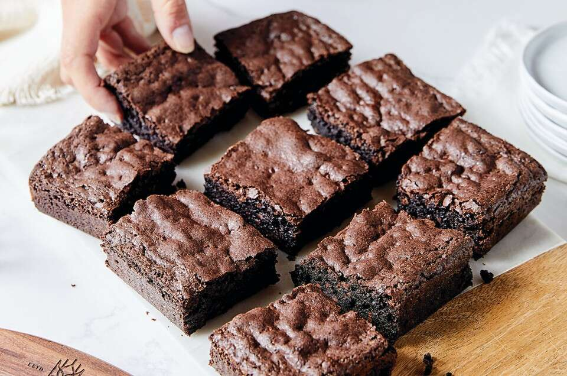

Directions for Bangin' Brownies
Make sure you have all the ingredients before beginning.
Also helpful to make sure you have all the needed tools such as a mixing bowl, baking pan, etc
- First, mix together the dry and wet ingredients in two separate bowls. Combine the sugar, flour, powdered sugar, cocoa powder, chocolate chips, and salt in a medium bowl. Then, whisk together the eggs, olive oil, and water in a large one.
- Dry ingredients in a mixing bowl
- Next, combine the wet and dry ingredients. Sprinkle the dry mixture over the wet one, and fold until just combined. The batter will be thick!
- Then, pour the batter into an 8×8 inch baking pan lined with parchment paper. Use a rubber spatula to spread it to all four sides of the pan and to smooth the top. The mixture will be very thick – that’s ok.
- Pouring batter into a pan
- Finally, bake! Transfer the pan to a 325-degree oven and bake for 40 to 45 minutes, until a toothpick inserted comes out with a few crumbs attached. Allow the brownies to cool completely before slicing and serving. Enjoy!
- Store any leftovers in an airtight container at room temperature for up to 3 days. They also freeze well for up to a month. Last time I made these, I doubled the recipe and stored the second batch in the freezer. It was so fun to have them on hand for a quick and easy dessert or afternoon treat!
| Nutrition Info |
Per Serving |
| Calories 3500 |
Calories 350 |
| Fat 600g |
Fat 60g |
| Protein 1500g |
Protein 150g |
| Fiber 450g |
Fiber 45g |
| Vitamin C 1200% |
Vitamin C 120% |